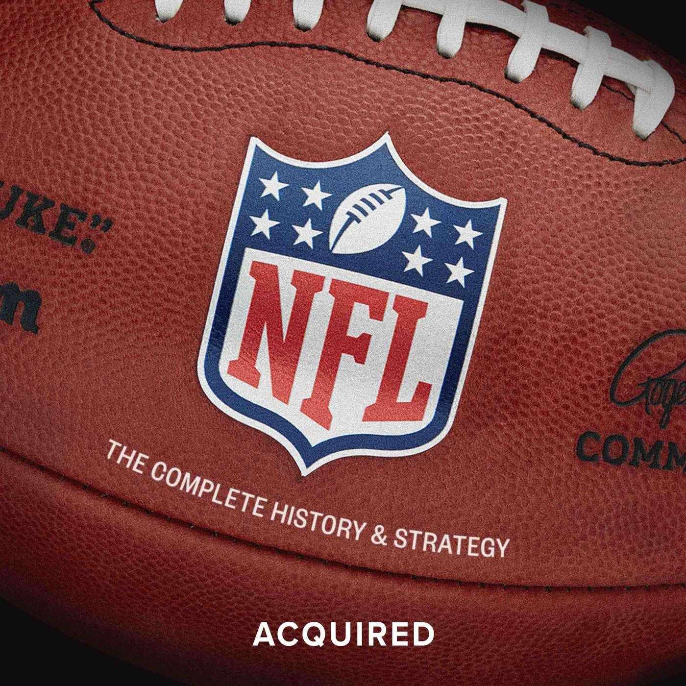

Editable reconstructions of the existing app. iOS first, followed by mobile web, desktop web and the desktop app. Sample data and source-based states are identified in captions.
Current implementation, reconstructed as editable HTML. iOS 26 device chrome; default dock order. iOS keeps the server URL and credentials in one form. Local Only enters an on-device library.
A1 · iOS · Connect
Halogen
Connect to your server
Server URL (https://…)
Username
Password
Connect
or
Use Local Only
Blank form. Connect is disabled until the required fields are filled. The native waveform symbol is approximated in this HTML.A2 · iOS · Local library
Halogen
Search podcasts
No podcasts yet
Subscribe from Discover, or add a feed URL with +.
Empty library, plus action and account control. Source determines the empty-state copy; the controls follow the physical-device capture.
Current implementation, reconstructed as editable HTML. iOS 26 device chrome; default dock order. Existing search, sort, per-podcast menu and episode actions. No new library organization.
B1 · iOS · Podcasts
Halogen
Search podcasts
AcquiredBen Gilbert and David Rosenthal10 episodes
Odd LotsBloomberg20 episodes
Software Engineering Daily49 episodes
Podcast row order, artwork slot and overflow menu follow PodcastsView. Values are sample data.B2 · iOS · Podcast detail
‹ Halogen
Acquired
Edit
Search
Acquired
Ben Gilbert and David Rosenthal
The stories and strategies of great companies. Conversations about their people, decisions and history.
Show more
Ferrari
›
Ferrari is the pinnacle of luxury scarcity.
3 hr 59 min · 5 months ago
Formula 1
›
Formula 1 is three competitions in one.
4 hr 29 min · 6 months ago

The NFL
›
The history and business of the NFL.
4 hr 17 min · 6 months ago
Podcast artwork and title precede the episode list. Search, filters and sorting remain in the top toolbar.B3 · iOS · Playing from podcast
‹ Halogen
Acquired
Edit
Search
Acquired
Ben Gilbert and David Rosenthal
The stories and strategies of great companies. Conversations about their people, decisions and history.
Show more
Ferrari
›
Ferrari is the pinnacle of luxury scarcity.
3 hr 59 min · 5 months ago
Formula 1
›
Formula 1 is three competitions in one.
4 hr 29 min · 6 months ago
Mini player stays above the dock and reduces the list viewport. Sample playing state, reconstructed from MiniPlayerBar and device captures.
Current implementation, reconstructed as editable HTML. iOS 26 device chrome; default dock order. Discover searches on submit. Import and export use the native file and share interfaces.
B4 · iOS · Discover
Halogen
Search
By Podcast⌄
Apple Podcasts ✓
Search podcasts or episodes
Enter at least 2 characters.
Discover opens in By Podcast mode. The dropdown switches to cross-podcast episode search. Results and remote detail pages are shown in the next sheet.B5 · iOS · OPML
‹
OPML
Export
Export subscriptions…
Import
Import OPML file…
Current import and export actions, before opening the system file picker.
Implemented from approved proposal A. Episode search spans podcasts. Source-based reconstructions with sample content; native controls use platform styling.
Search runs on submit. Infinite scroll uses stable pages from a bounded provider snapshot. iTunes supplies up to 200 search results; gpodder supplies up to 20 podcasts and has no episode index. Remote feeds preview up to 200 episodes. Podcast descriptions expand from three lines; episode descriptions remain separate.
Current implementation, reconstructed as editable HTML. iOS 26 device chrome; default dock order. The first four destinations are configurable. More is always present.
C1 · iOS · Latest
Edit
Halogen
Search
FreeBSD with John BaldwinSoftware Engineering Daily
›
FreeBSD is one of the longest-running operating systems.
63 min · last month
FerrariAcquired
›
Ferrari is the pinnacle of luxury scarcity.
3 hr 59 min · 5 months ago
Formula 1Acquired
›
Ferrari is the pinnacle of luxury scarcity.
3 hr 59 min · 5 months ago
Latest uses the shared episode row, including description preview, play and download controls.C2 · iOS · Queue
Edit
Halogen
Search
FerrariAcquired
›
Ferrari is the pinnacle of luxury scarcity.
3 hr 59 min · 5 months ago
Formula 1Acquired
›
Ferrari is the pinnacle of luxury scarcity.
3 hr 59 min · 5 months ago
The NFLAcquired
›
Ferrari is the pinnacle of luxury scarcity.
3 hr 59 min · 5 months ago
Queue list with an active mini player. Edit enters native selection and reordering; those modes are not shown here.C3 · iOS · Playlists
Halogen
Queue3 episodes›
Evening listening2 episodes›
Playlist index, with the default queue and one user playlist. Sample playlist name.
Current implementation, reconstructed as editable HTML. iOS 26 device chrome; default dock order. The full player is a native sheet. Transport, chapters, speed, sleep timer and continuation controls come from the current player.
C4 · iOS · Episode detail
‹ Acquired
Episode
Ferrari
Acquired3 hr 59 min
Play
Ferrari is the pinnacle of luxury scarcity.
Chapters
00:00Introduction
12:48The early years
44:06Building the business
Metadata and available chapters. Chapter data is illustrative; controls follow EpisodeDetailView.C5 · iOS · Full player
UP NEXTFormula 1Acquired
FerrariAcquired
1:23:39−2:35:21
Chapters1× Off
PlayerSheet composition from code. The artwork, up-next preview and controls are current capabilities. Elapsed time is sample data.
Current implementation, reconstructed as editable HTML. iOS 26 device chrome; default dock order. Downloads separate files on this device from files on the server. History reuses the same episode row.
C6 · iOS · Downloads
Edit
Halogen
On deviceServerDownloading
Search
FerrariAcquired
›
Ferrari is the pinnacle of luxury scarcity.
3 hr 59 min · 5 months ago
Remote account shown. Available download facets differ for Local Only. Downloaded-row actions follow the shared episode component.C7 · iOS · History
Edit
Halogen
Search
FerrariAcquired
›
Ferrari is the pinnacle of luxury scarcity.
3 hr 59 min · 5 months ago
A played episode in History. Sample listening record; the search, filters and selection toolbar are unchanged.
Current implementation, reconstructed as editable HTML. iOS 26 device chrome; default dock order. A local administrator is shown. Server administration and account-edit controls are conditional on account kind and authorization.
D1 · iOS · More
Halogen
Queue›
Latest›
Podcasts›
Playlists›
Downloads›
Discover›
History›
Settings›
Reorder or hide items in Settings → Configure dock.
The visible navigation items are preference-driven. Admin-only destinations are outside this viewport.D2 · iOS · Settings
‹
Halogen
Account
Userlistener
LibraryLocal Only
Status Online
Accounts›
UI
SizeMedium (125%, default)
ThemeDark
Playback
Playback sourceOn-device library
Skip forward30s
Skip back15s
Default speed1×
Current grouped form, preserving native section headings and row values. Lower sections continue by scrolling.D3 · iOS · Accounts
‹
Accounts
Accounts on this device
listenerThis device
listenerhttps://podcasts.example.com
Add account (server login)
New user on this device›
Manage server users›
Switching accounts swaps the whole library view; each account keeps its own cache and settings. Removing an account signs it out on this device; nothing is deleted on the server.
Saved local and remote sessions. Example domain replaces private configuration. New local user and server management depend on the active account.
Current implementation, reconstructed as editable HTML. iOS 26 device chrome; default dock order. This sheet records an existing form, including its current technical field labels.
D4 · iOS · Download config
‹ Acquired
Download config
Poll interval (secs)3600
Max episodes50
Max concurrent downloads3
Auto-download new episodes
Override how often this podcast is polled and how its episodes download.
Save
Default override values are 3600 seconds, 50 episodes and 3 concurrent downloads. Auto-download is off by default.
Current implementation, reconstructed as editable HTML. iOS 26 device chrome; default dock order. The current local-data screen exposes individual cleanup actions, followed by separate account-cache and on-device-library deletion controls below the fold.
D5 · iOS · Local data
‹
Local data
This account
Content cache12 entries
View settings4 items
Preferences1 items
Pending sync queue0 ops
Device audio1 files · 24 MB
Artwork cache (memory)in-memory
Device log32 entries
Other accounts
Other accounts' data1 accounts · 2 MB
Current cleanup rows. Counts are illustrative and retain the existing pluralization. This mock does not activate any destructive action.
Current browser UI reconstructed from Dioxus source and passing browser captures. The desktop sidebar becomes a bottom dock below the existing breakpoint. Browser bars are illustrative browser chrome, not application controls.
W1 · Mobile web · Queue
podcasts.example.com
Halogen
FreeBSD with John BaldwinSoftware Engineering Daily
›
FreeBSD is one of the longest-running and most widely used operating systems.
63 min · Mar 31
‹ › Share Tabs
Default medium font size shows five primary destinations plus More. Cards, gray surfaces and browser color accents match the current web shell.W2 · Mobile web · More
podcasts.example.com
Halogen
Menu
Queue›
Latest›
Podcasts›
Playlists›
Downloads›
Discover›
History›
Settings›
‹ › Share Tabs
The mobile-only menu exposes the full navigation list. This is the existing /menu route, not a new page.
Current Dioxus desktop browser layout, with the sidebar, shared episode cards and bottom mini player. The sample viewport is 1100 × 740, including browser chrome.
W3 · Desktop web · Queue
podcasts.example.com− □ ×
Halogen
Online
FreeBSD with John BaldwinSoftware Engineering Daily
›
FreeBSD is one of the longest-running and most widely used operating systems.
63 min · Mar 31
FerrariAcquired
›
Ferrari is the pinnacle of luxury scarcity.
239 min · Apr 8
Queue keeps the same single content column as the running browser app. The sidebar takes 256 CSS pixels at the default root size. Current screenshots use a larger configured UI size.
The desktop application uses the existing Dioxus shell inside a native window. This source-based mock shows the shared queue layout. Window decorations vary by operating system.
W4 · Desktop app · Queue
Halogen− □ ×
Halogen
Online
FreeBSD with John BaldwinSoftware Engineering Daily
›
FreeBSD is one of the longest-running and most widely used operating systems.
63 min · Mar 31
FerrariAcquired
›
Ferrari is the pinnacle of luxury scarcity.
239 min · Apr 8
Native shell, same navigation and content as desktop web. Local Only is available in the desktop app; a browser does not host an on-device library. No desktop capture is claimed.
{kind=link}
{kind=link}
{kind=link}
{kind=link}
{kind=link}
{kind=link}
{kind=link}
{kind=link}
{kind=link}
{kind=link}
{kind=link}
{kind=link}
{kind=link}